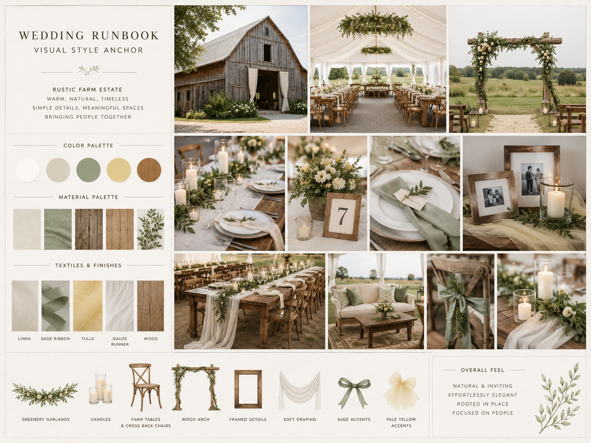
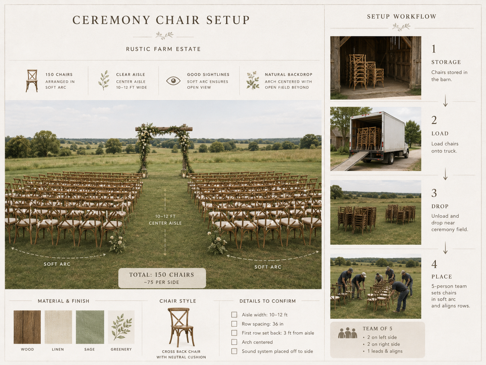
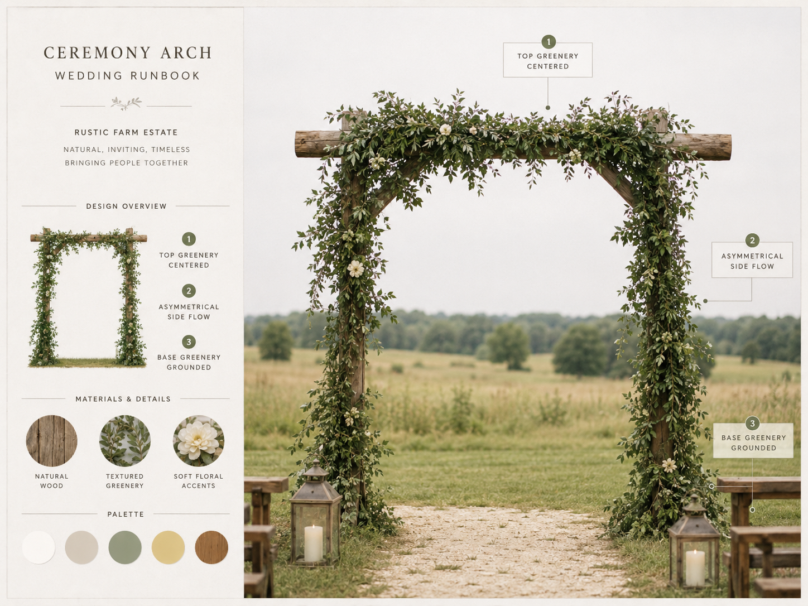
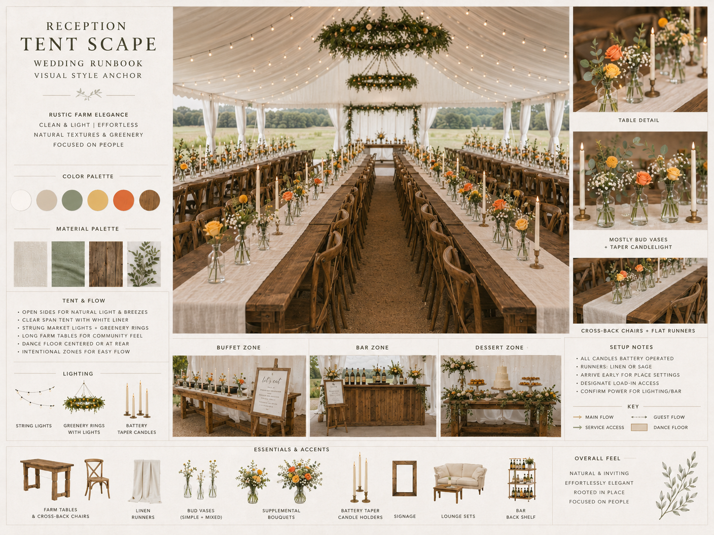
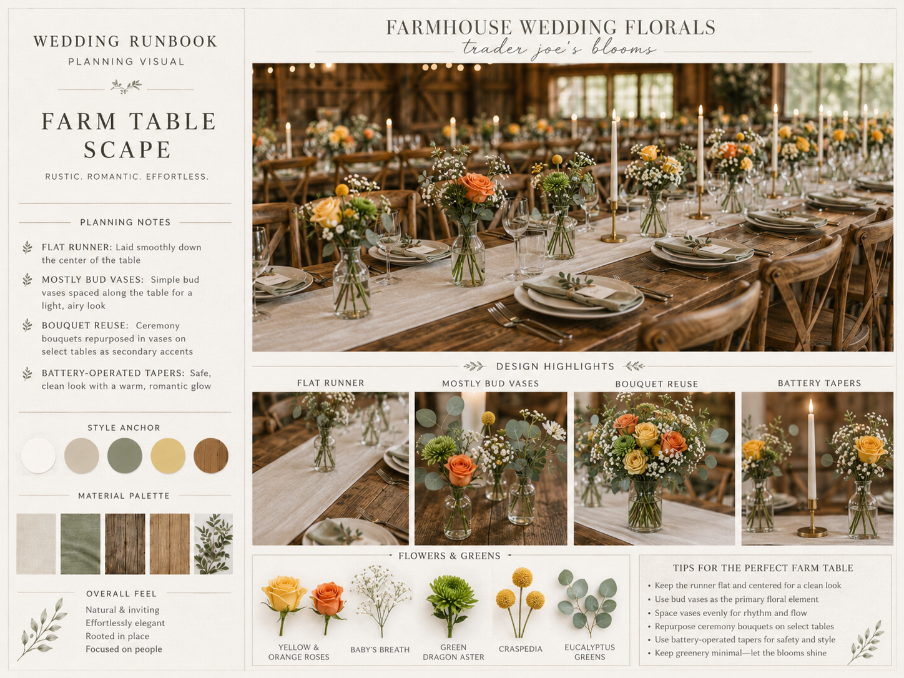
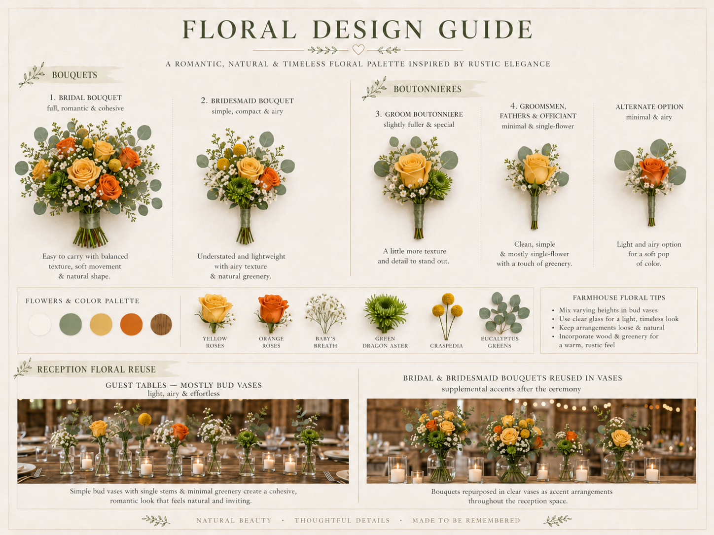
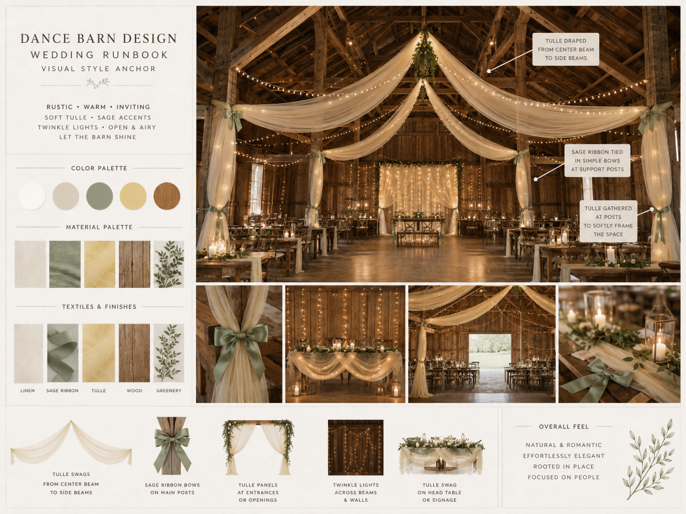
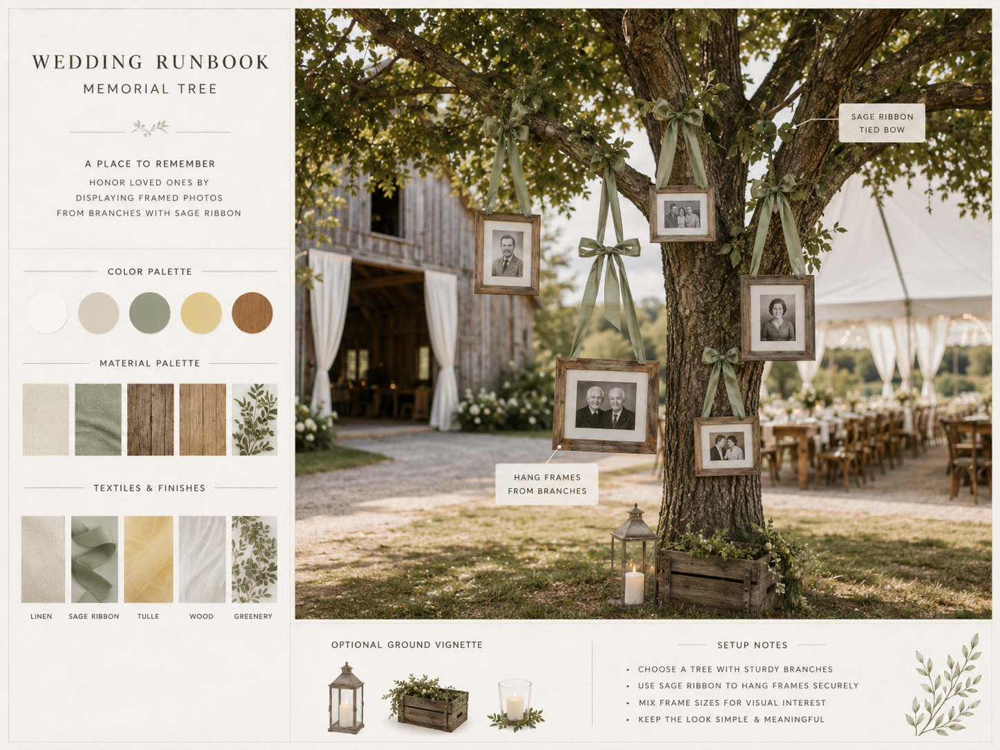
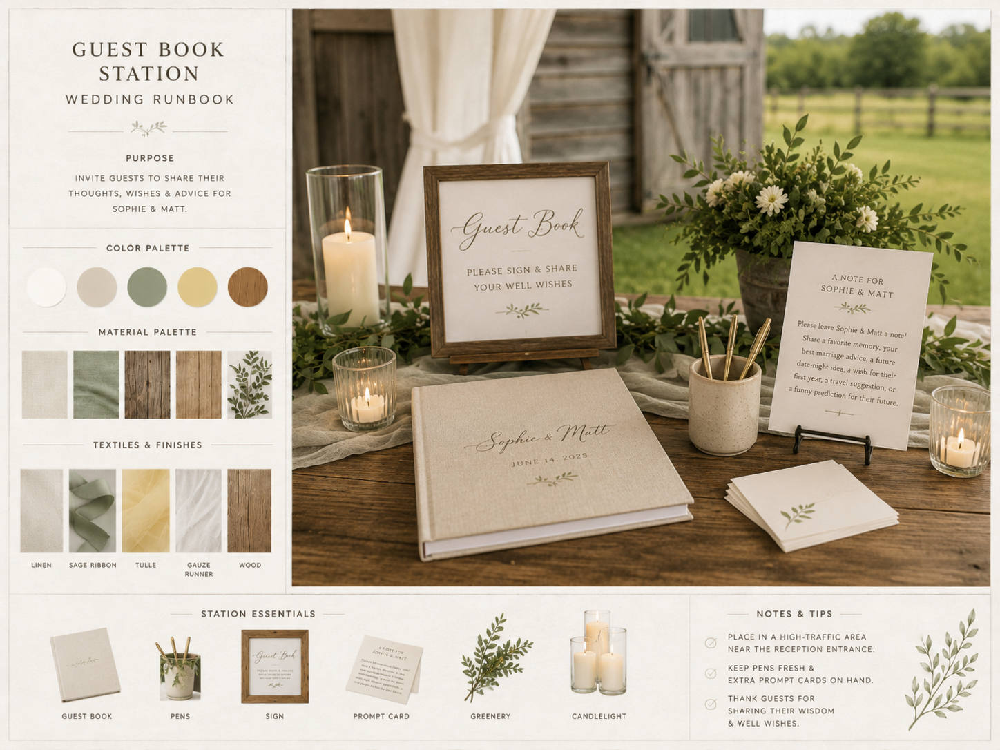
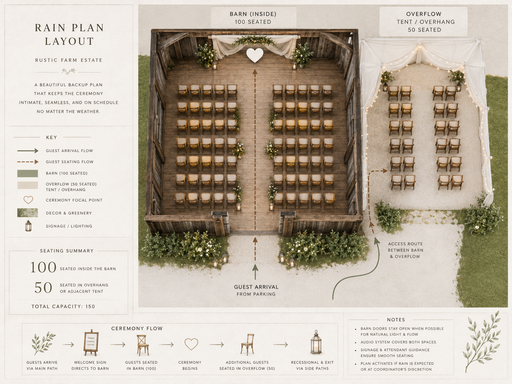

Visual Style Anchor
Overall rustic farm wedding look and material palette. Use as the master reference for all setup decisions: cream, sage, pale yellow, wood, greenery, simple rustic elegance.

Use these visuals as the setup team’s first reference before asking Molly or Ellen.
Overall rustic farm wedding look and material palette. Use as the master reference for all setup decisions: cream, sage, pale yellow, wood, greenery, simple rustic elegance.

150-chair soft arc using Wild Sugar's mismatched chairs. Erik says 4 helpers are needed to move/place chairs in the field, with a 10-12 ft aisle.

Wood arch with natural greenery. Greenery should feel full but still allow the wood base to show through.

Long farm tables, flat runners, bud vases, and battery taper candles. This is the corrected tent direction: flat runners, mostly bud vases, yellow/orange floral palette, battery-operated taper candles.

Flat runner with mostly bud vases, ferns, and leaves. Keep runners flat. Add ferns/leaves on top to coordinate with the napkin aesthetic. Reuse ceremony bouquets only as secondary accents.

Corrected flowers and boutonnière plan. Grounded in the available flowers: yellow roses, orange roses, baby’s breath, green dragon aster, craspedia, eucalyptus. Groom boutonnière uses a yellow rose.

Main yellow tulle installation with sage ribbon and twinkle lights. Main use of tulle is in the dance barn. Preserve the rustic barn feel; no circular lights. If the ceremony moves to the barn, archway/backdrop placement still needs a final call.

Framed photos hung from a real tree with sage ribbon. Pick a sturdy real tree near the tent and barn. Rain plan: hang picture frames along the tent wall.

Physical guest book with prompt card. No audio guestbook. Include pens, guest book, simple sign, and prompt card. Table/location is still TBD.

Barn rain ceremony plan: limited seating plus standing room. Erik says the barn can seat roughly 20-40 guests with the rest standing. There is no tent overhang. Clear umbrellas are purchased; bridal party processes from the house.

| Person / Team | Primary job | Notes |
|---|---|---|
| Molly | Organizer; flowers/decor lead; final decision-maker with Ellen. | Direct décor setup helpers Friday/Saturday. |
| Ellen | Organizer; rentals/tables/breakdown lead; final decision-maker with Molly. | Leads tent setup, WSH closet items, rehearsal dinner table setting, and Sunday rental readiness. |
| Erik + Wild Sugar team | Venue logistics, vendor support, water dispensers, trash removal until 8 PM. | Also assists heavy cake delivery/setup, ceremony chair logistics, golf cart support, and pig roast logistics. |
| Caroline | Photography coordinator. | Keep formal photos moving; use family/bridal party list. |
| Shannon | Beverages, ice, and bar setup. | Sets up bar Friday night; leads ice and all drink logistics; gets crew to move beverages from garage/barn to tent Saturday morning. |
| Patrick + Addie + Clay | Charcuterie purchase, prep, and setup. | Costco charcuterie arrives Friday at 3 PM. Saturday prep party lays food out by 2:00 PM; waitstaff adds caprese skewers closer to service. |
| Rory + Ben | Games setup together, pending weather. | If games are rained out, they become muscle for setup/logistics. |
| Zach + Eve | Sunday dishwashing and reset crew leads. | Rally the troops to wash all WSH dishes/glassware and return items to the Wedding Closet. |
| Zach | Friday charcuterie receiving lead. | In charge of meeting Patrick Friday to load charcuterie supplies into the house. |
| Patrick + Liam | Saturday side dish handoff. | Liam does White River pickup; Patrick meets him to load side dishes into the house refrigerator. |
| Kevin’s Wait Staff | Food service, clearing, bussing, dessert setup, leftovers. | Arrive 2:30 PM; approx depart 9:00 PM. |
| Bartenders | Bar setup/service, glass re-racking, champagne chill/open for toast. | May 24 plan says arrive 2:45 PM and are set/ready for 3:45 PM service; depart around 9:00 PM. |
| DJ | Ceremony, cocktail, reception, and barn dancing sound. | Arrives 12:30-1:00 PM; sets mobile unit in field, main equipment in tent, then moves later to barn. |
| Pig roasting team / Clifford | Pig roast, carving/serving meat, dispose of bones. | Roast starts night before; Clifford brings his own tent to cover the roaster if needed. |
| Time | Action | Owner / notes |
|---|---|---|
| Night before | Pig roast begins in portable smoker. | Clifford / pig roasting team; Clifford brings his own tent to cover roaster if needed. |
| 8:30 AM | Bagels and coffee. | Danica. |
| 9:00 AM-noon | Work party: ceremony chairs, table settings, florals, prep tent, beverages, games, and setup details. | See Saturday command-center task list. |
| 12:00 PM | Cake pickup; White River side dish pickup. | Nate + Ash pick up cake. Liam picks up side dishes. |
| 12:30-1:00 PM | DJ arrives. | Mobile unit in field, main equipment in tent, later move to barn. |
| 1:00 PM | Dinner side dishes delivered and placed in house refrigerator. | Patrick meets Liam to load side dishes into house. |
| 1:45 PM | Photographer starts getting-ready/detail coverage. | Photo window 1:45–8:45. |
| 2:00 PM | Cake delivered and set up on dessert table. | Nate + Ash deliver; Erik’s team assists heavy move; Addie fixes any damage. |
| 2:00–2:30 PM | Charcuterie/grazing table laid out and covered. | Patrick + Addie + Clay; finish by 2:00-2:30. |
| 2:30 PM | Kevin’s waitstaff arrives. Guest arrival begins. Golf cart driver on duty. | Guests park and move to field/ceremony site. |
| 2:45 PM | Bartending team arrives. | Set and ready for 3:45 PM service. |
| 3:00–3:30 PM | Ceremony. | Rain location: barn, limited 20-40 seated and the rest standing; no overhang. Clear umbrellas available; bridal party processes from house. |
| 3:15 PM | Caprese skewers out from house refrigerator to grazing table. | Waitstaff. |
| 3:30–4:30 PM | Formal photos: family, bridal party, couple. | Caroline keeps list moving. |
| 3:45–5:15 PM | Cocktail hour, signature cocktails, lawn games, charcuterie. | Bartenders begin service; DJ covers cocktail music. |
| 4:00–5:15 PM | Buffet prep and setup. | Family pre-stages chafing dishes/platters/bowls/baskets/utensils. |
| 5:00 PM | Pig roasting completed; meat brought into tent for carving/serving. | Chef transports pig; Erik supports trash/logistics. |
| 5:15–5:30 PM | Guests invited into tent and seated. | Open seating except reserved family/bridal party tables. |
| 5:30–7:00 PM | Dinner buffet open. | Invite guests by table; buffet accessed from both sides. |
| 6:30 PM | Ceremonial cake cutting. | Place cake knife, two dessert plates, forks. Move cake to prep tent for slicing. |
| 6:45 PM | Champagne placed/opened at tables. | 2 bottles per table; bartenders pre-chill/open. |
| 6:50–7:00 PM | Toasts, max 3–4. | Announce dessert after toasts. |
| 7:00–7:30 PM | Dessert service. | Cake slices + cupcakes on former grazing table near dance floor. |
| 7:30–7:45 PM | First dance under tent: Sophie & Matt only. | DJ to MC. |
| 7:45–8:00 PM | M&S invite guests to barn. | Some guests may linger at tables/bar. |
| 8:00 PM | Barn dancing begins. | Waitstaff begins final clearing. |
| 8:45 PM | Photographer off duty. | Dancing shots before departure. |
| 9:00 PM | Bartenders and service team depart; bar remains self-serve. | Food packed, dishes/glassware re-racked. |
| 10:00 PM | DJ/music ends; guests depart. | Final animal-prevention sweep. |
| Vendor / Team | What they bring or handle | Balance due / payment note |
|---|---|---|
| Wild Sugar Homestead | Venue, WSH closet items, mismatched ceremony chairs, WSH tables, 150 WSH champagne glasses, water dispensers, venue support, compost/trash coordination, and golf cart support. | Verify before final print. |
| Undercover Tent | 40x60 high peak tent, globe string lights, 8 farm tables, dinner plates, dessert plates, silverware, Collins glasses, 300 wine glasses, small dance floor, serving platters, food station tables, dessert table, banquet table/linen. Sidewalls/flaps not booked unless rain decision is made by Wednesday 8 AM. | Verify exact balance and whether paid. |
| Spicey Spoke | Friday rehearsal dinner catering in barn; self-contained food truck, no WSH kitchen equipment needed. | Confirmed per 5/24 master plan. |
| Maple Street Catering / Big Fatty’s BBQ | Pickup order: caprese skewers, salads, mac & cheese, baked beans, slider buns, BBQ sauces. | Verify payment status. |
| Kevin’s Wait Staff | 3-person service team: setup support, buffet replenishment, clearing, dessert setup, leftovers, dish/glass re-racking. | Verify balance. |
| Dana / Bartending Team | 3 bartenders, bar setup, cocktail hour service, beer/wine/non-alcoholic service, glass sweeping/re-racking, champagne chill/open for toast; bring ice, coolers, serving tubs. | 5/24 plan: arrive 2:45 PM, ready to serve at 3:45 PM, depart around 9 PM. Confirm if newer note supersedes this. |
| DJ | Ceremony/cocktail/reception music, MC first dance and barn dancing; mobile unit in field, main equipment in tent, later move to barn. | Arrives 12:30-1 PM. Verify balance. |
| Photographer | 7 hours, 1:45–8:45 PM; getting ready, details, ceremony, portraits, cocktail hour, first dance, barn dancing. | Verify added hour/payment status. |
| Pig roasting team / Clifford | Roast starts night before, carving/service at meat station, disposal of bones/roast waste; Clifford brings his own tent to cover the roaster. | Friend/team arrangement — verify any cash due or supplies needed. |
| Cake pickup / delivery | Nate + Ash pick up cake at noon and deliver at 2 PM; Erik’s team helps move/setup; Addie repairs any damage. | Cake is heavy; needs helper crew. |
| Danica | Bagels and coffee all three mornings; tulle team lead. | Confirm timing/counts. |
| Varina | Friday lunch platters for the work party; supports Molly with flowers/decor. | Confirm delivery timing. |
Tip: Print the Visual Setup Guide pages in color and keep one copy with Molly/Ellen and one copy at the setup table.